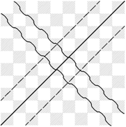
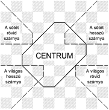
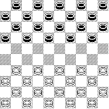
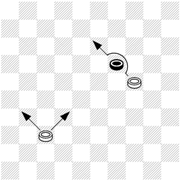
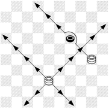
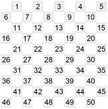
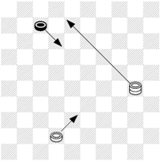
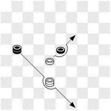
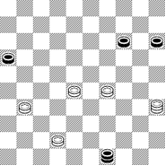

Iser Kuperman, Jurij Barszkij. A száznégyzetes dámajáték. Zalaegerszeg, 2017.
A mű eredeti címe: І.Куперман, Ю.Барський. Стокліткові шашки. Державне видавництво дитячої літератури, Київ, 1961.
Fordította ukrán nyelvről: Penkalo Viktor
A magyar fordítást lektorálta: Gedéné P. Oxána
Szerkesztette: Penkalo Alex
Annotáció az ukrán kiadáshoz
A száznégyzetes dámajáték – nagyon érdekes és lebilincselő játék. Elég csak egyszer figyelmesen megnézni, hogyan
játszanak a tapasztalt dámajátékosok, és egy életen át rabjai lehetünk.
Ez a játék szellemességével, a gondolkodás mélységével magával ragad. Ám a legfontosabb benne mégis az, hogy
fejleszti a memóriát és logikus gondolkodásra tanít. Nem ok nélkül érdeklődnek a száznégyzetes dámajáték iránt a
gyerekek is.
Iser Kuperman nemzetközi nagymester és Jurij Barszkij mester írták ezt a könyvet az ifjú olvasóknak. E könyv segít
elsajátítani a játékot azoknak, akik soha nem foglalkoztak a száznégyzetes dámajátékkal, de sok érdekességet és
hasznos dolgot találnak benne haladó dámajátékosok is.
Annotáció a magyar kiadáshoz
Zalaegerszegen az első, még nem hivatalos 100-négyzetes dámajáték-tornát 1992-ben bonyolították le, de csak 2003-ban
hozták létre az országban az első Dámajáték Sportegyesületet. Az első könyv a 100-négyzetes dámajátékról csak száz
példányban jelent meg, egy mini dámakészlettel kiegészítve. Az érdeklődők (főleg 7-13 évesek) házilag gyártott
táblákon tanultak játszani. De volt kitartásuk, és az első kis bajnokok – Szekeres Dávid, a Borsos testvérek, Bálint
és Dániel, Gerencsér Zsófia, Balogh Beáta, Fekete Mátyás, Fehér Gábor, Huzián Szabolcs, Vass Katalin és sok-sok más
gyerek alapozták meg Magyarországon az addig ismeretlen szellemi táblás játék népszerűsítését.
Támogatást kaptunk az akkori önkormányzattól, vállalatoktól, a Nemzeti Civil Alapprogramtól és főleg a gyerekek
szüleitől. Utaztunk tanulni és versenyezni európai országokba, megoldottuk a dámakészletek gyártását és tankönyvek
kiadását.
Most, amikor országszerte megnövekedett a dámajátékosok száma, megalakult a Dámajátékosok Magyar Szövetsége,
szükségessé vált egy olyan dámajáték könyv megjelentetése, amelyben megtalálható a játszma minden szakasza, és
legfontosabb fortélyai. Jelen könyv teljes mértékben megfelel ennek, mert a kezdőknek nagyban segít megszeretni ezt
a háromszáz éves játékot, de a haladóknak is, mivel növelhetik tudásukat egészen a mester fokozatig.
A szívemet a dámajátéknak adom
(Iser Kuperman)
Iser Kupermant nem alaptalanul tekintik nyugaton a dámajáték nagykövetének, sőt, igazi dámajáték-legendának. A dámajáték egész történelmében soha senki – beleértve az országok hivatalos szövetségeit is –nem tett annyit a dámajáték népszerűsítéséért és a játék elméletének megismertetéséért, mint Kuperman. Pompás sikereinek sorozata a mai napig folytatódik*. Pedig 2002. április 21-én betölti a 80. évét és továbbra is a világ legerősebb dámajátékosai közé tartozik.
Az orosz dámát 1935-ben, 13 éves korában kezdte játszani. Az elején Szemjon Nagov, kiváló dámajáték-pedagógus irányításával tanult, és csak 1953-ban, 31 évesen ismerkedett meg a 100-négyzetes dámajátékkal. Az elmúlt 67 év alatt több mint 3000 versenypartit játszott le. Eredményként ez hétszer hozott neki világbajnoki címet. 1993-ban Brazíliában, 71 évesen szerzett villámverseny-világbajnoki címet a 64-mezős dámajátékban, legyőzve olyan kistáblás csillagokat, mint A.Schwarzman, W.Wigman, I.Doska, G.Szapiro vagy L.Loriwal. Kuperman háromszor volt a Szovjetunió bajnoka az orosz dámában, ötször az USA bajnoka pool checkersben és ugyanannyiszor a 100-négyzetesben. Háromszor nyerte el az Amerikai kontinens bajnoka címet.
A Szovjetunióban töltött évek során első volt a hivatalos Rating-listán és utána sokáig, az emigrációs évei alatt is vezette ezt a listát. 3 évvel ezelőtt még szerepelt a legjobb tíz játékos között az FMJD Raiting-listáján. Több mint 60 nemzetközi tornát nyert. 1958 áprilisában a rotterdami jelöltek torna-győzelme után az FMJD létrehozta a nemzetközi nagymesteri címet (addig csak nemzetközi mester cím létezett), és Kuperman volt az első, aki ezt viselhette. Az első üdvözlő táviratokat a sakk akkori világbajnoka, M.Botvinnik és Salo Flor nagymester küldték neki. A Szovjetunióban ugyancsak ő volt az első számú nagymester**. 1958-ban Kuperman elsőként szerzett világbajnoki címet saját országának.
Kuperman több mint 600 szimultánt játszott, amelyek során két-háromszázezer néző előtt zajlott le több mint 20 ezer parti. 40 könyvének eladott példányszáma meghaladja a félmilliót. Könyvei megjelentek orosz, ukrán, francia, holland, portugál, észt és angol nyelven, sőt Braille-írással a vakok számára is. Új szisztematikát vezetett be, amely a mai napig érvényes. Iser Kuperman a dámajáték népszerűsítése céljából 51 országot látogatott meg! Több helyen beszélt miniszterekkel és híres uralkodókkal. Néhányukkal össze is barátkozott. Sok országban jelentős mértékben befolyásolta a dámajáték fejlődését. Gyakran személyesen vett részt, illetve ösztö-nözte versenyek megszervezését. Hollandiában például működik olyan bridzs-klub, amely Kuperman nevét viseli, Brazíliában pedig dáma-klub. Curaçaoban Kuperman tiszteletére dámajáték- tornát rendeznek.
Kuperman alapgondolata és tevékenysége – bemutatni a világnak a mi játékunkat. Megmutatni, hogy a dámajátékra szükség van, hogy ez olyan szellemi sport, amelyet bárki űzhet: férfiak, nők, gyerekek, mozgássérültek és egészségesek egyaránt.
*) Iser Kuperman meghalt 2006. márciusban, Bostonban (USA).
**) 1978-ban Izraelbe emigrált, ezért a szovjet hatalom megfosztotta őt a Sport Érdemes Mestere címétől és sokáig
nem is említették a szovjet sajtóban.
Sakk- és dámajáték szakember, fordító, kutató, szerző, Iser Kuperman trénere. Több világbajnok szerint a végjátékról szóló könyve a legjobb dámáról írt könyv a világon.
Bevezetés. Egy kicsit a dámajáték történelméből
ELSŐ FEJEZET. A játékszabályok
Előszó
Dámajátéktábla
Korongok
Dámajáték notáció
A dámajáték szabályai (közös az orosz dámajátékkal)
Megkülönböztető szabályok
MÁSODIK FEJEZET. A kombinációs meglepetésekről
Mit is jelent a kombináció?
Indíték, ötlet, technikai fogás
A dámajátékos kombinációk világa
Kombinációk a megkülönböztető szabályokra
Tipikus ütések
Hogyan lehet felhasználni a szabad tempót
Sötét korong a 30. (világos – a 21.) mezőn
Szabad tempó beszerzése
Némi egyéb kombinációk
Csapdák
HARMADIK FEJEZET. Pozíció – a játék alapja
A korongok és a mezők értékéről
A pozíciós játék célja
Lekötés
A szárnyakon lévő erők egyensúlyba hozása
Centrum
Gyenge peremes korongok
Gyenge elszigetelt korong
Rosta
A nyitott dámamezők
Lemaradt korongok
Különleges peremkorong
Aktív peremkorong
Mit kell tudni az oppozícióról?
Korongok lecserélése
A tempókról és a tempószámokról
Fenyegetés
Áldozat
A pozíció értékelése
NEGYEDIK FEJEZET. A játszma három szakasza
Megnyitások (Debüt)
Középjáték (Mittelspile)
Végjáték (Endspile)
ÖTÖDIK FEJEZET. Dámázni így kell!
1. sz. parti. I.Kuperman – P.Szvjatoj
2. sz. parti. M.Korhov – M.Kogan
3. sz. parti. I.Kuperman – G.Gross
4. sz. parti. M.Kogan – I.Kuperman
5. sz. parti. B.Roosenburg – M.Deslauriers
6. sz. parti. V.Giljarov – M.Kogan
7. sz. parti. M.Szpancireti – A.Verete
8. sz. parti. G.Van-Dejk – I.Kuperman
HATODIK FEJEZET. A versenyszabályok
Feladatok megoldása
Ha olyan célt állítunk magunk elé, hogy tisztázzuk a dámajáték származását, akkor jó sokáig fogjuk lapozgatni a történelem megsárgult oldalait. Ennek a játéknak a gyökerei jó messzire nyúlnak: ezeket már meglehet figyelni az ókori Görögországban is, az ókori Rómában is, sőt az ókori Egyiptomban is. Mi az, ami megvédte a dámajátékot a feledéstől? Mi tette érdekeltté a különböző országok népeit, hogy átadják ezt a játékot nemzedékről nemzedékre? Kizárólag a szabályok egyszerűsége, a logika és a játék szokatlan szépsége. „Ha a sakk – a játékok királya, akkor a dámajáték – a miniszterelnöke”. E Felix Jean francia írótól származó szállóige tréfásan, de igazságosan tükrözi a dámajáték fontosságát. Napjainkban a különböző országokban létezik több dámajáték rendszer, de legsikeresebb közülük, talán, a száznégyzetes dámajáték. Ezzel magyarázható az, hogy a száznégyzetes dámajáték elterjedt a világ összes kontinensén.
A száznégyzetes dámajáték viszonylag nem olyan régen keletkezett. Noha a szülőföldje Franciaország, néha lengyel dámának nevezik mostanában is, mivel közismert tény, hogy elsőként egy lengyel dámajátékos javasolta, hogy vezessék be a száznégyzetes táblát (az akkor létező 64-négyzetes helyett), valamint változtassák meg a korongok mennyiségét és egyes játékszabályokat is. Ez a lengyel dámajátékos egy tekintélyes francia tisztnek volt az állandó partnere. Amennyire tudjuk, ez 1723-ban történt. Sajnos, a dámajáték történészek nem tudták kideríteni annak a lengyel játékosnak a nevét, a könyvekben őt egyszerűen Lengyelnek nevezték*. Egyszer a királyi palotában, ahol szolgált a fent említett francia főúr, és ahova gyakran meghívták a partnereit, éppen zajlott a soros dámajáték parti. A játszma bizonyos pillanatában a Lengyel jó hosszan elgondolkodott. A nézők, akik mellettük álltak (hiszen szurkolók régtől fogva mindig voltak), türelmetlenül vártak a lépésére: mindenki ismerte a Lengyel nagy tudását a játékban és elképzelték, hogy milyen pusztulás lesz az ellenfél táborában. De a pusztulás nem következett be. És ami legfurcsább,– nem lett meg maga a lépés sem! A Lengyel hirtelen felpattant a helyéről és gyors léptekkel indult a kijárat felé… Az őrség ismerte őt és ezért átengedte. Ezt az udvariatlanságot a francia főúr gyengélkedéssel magyarázta meg. És mivel az ellenfél elinalt, neki vereséget ítéltek, és ez kicsit megvigasztalta a főurat – nem túl gyakran volt szerencséje legyőzni a Lengyelt.
*) Jelenleg a lengyel történészek kutatásai alapján már tudjuk, hogy a francia Rydgar marki partnere volt Maciej Żubr, katonatiszt a Maria Leszczynska díszőrségéből.
Három nap múlva a Lengyel újra megjelent a palotában. Elnézést kért és elismerte a vereségét, amivel újra megszerezte a partner bizalmát. Amikor az ellenfelek leültek a játék megkezdéséhez, valaki megkérdezte a Lengyeltől, hogy a múltkor miért olyan sietősen ment el. És a következő derült ki. Amikor ők játszottak partit és következett az a szerencsétlen lépés, a Lengyelnek hírtelen eszébe jutott egy csodálatos kombináció. Számításokat végzett, minden összejött, de az utolsó, döntő ütéséhez a dámatábla… kicsinek bizonyult! Különböző lépés-áthelyezéseket végzett fejben, de a tábla peremei mindig korlátozták a fantáziáját. Ez a kombináció olyan szép volt, hogy nem gondolkodni róla lehetetlen volt… És mi lenne, ha megnagyítanánk a táblát?! Az ötlet annyira lekötötte a Lengyelt, hogy mindent a világon elfelejtett és rohanva indult haza. Három napot töltött az elkészített száznégyzetes tábla fölött, kigondolva és megvalósítva rajta új, egyre szebb kombinációkat. Ez alatt olyan következtetésre is jutott, hogy a játék gazdagabb lesz, ha megnöveli a korongok számát és megváltoztat egyes szabályokat. Amikor pedig kiderült, hogy a Lengyel hozott egy nagy táblát, akkor a nézők megkérték, hogy mutassa be az újítását. A Lengyel megkezdte a bemutatást, és előttük egymás után olyan csodálatos kombinációk születtek, amelyek lehetőségeire addig nem is gondoltak. A Lengyel ellenfele, a főúr, szintén nagyon el volt ragadtatva az újdonságtól, és azt javasolta, hogy a játékot már az új, nagy dámatáblán kezdjék el. Egyeztették a szabályok változtatásait és először a dámajáték történelmében megkezdődött a küzdelem az akkor még ismeretlen száznégyzetes táblán. Ezt a napot, amelynek pontos dátuma, persze, elfelejtődött, tartják a száznégyzetes dámajáték születésnapjának (kb. 1723-ban).
A javasolt újítások gazdagították a játékot és annyira vonzóvá tették, hogy a játék hamarosan számos rajongót szerzett úgy Franciaországban, mint más országokban is. Az első világbajnokságot 1894-ben rendezték. Ezen a nemzetközi tornán a francia Isidore Weiss győzött, aki a kombinációk nagy mestere volt. Weiss partijai elámították, és még most is elámítják az egész dámajátékos világot. Neki sikerült megtartania a bajnoki címet 18 éven keresztül – 1912-ig.
1912-ben a nagy nemzetközi tornán a holland Herman Hoogland lett a győztes. Onnantól kezdve, hiába versenyeztek a legfőbb dáma-címért más országok képviselői is – Olaszországból, Belgiumból, Svájcból – a világ dámajáték koronája felváltva vándorolt Franciaországból Hollandiába és vissza.
1925-26-ban a francia Stanislav Bizot lett világbajnok. Még 1926-ban azonban elveszítette e címet a Marius Fabre nevű honfitársával vívott meccsen. 1928-ban világbajnoki címet nyert újra a holland – Benedictus Springer. Utána a cím átment (1934-ben) a francia Morice Raichenbach-hoz, aki már 16-évesen bámulatba ejtette a dámajáték kedvelőit kiváló tehetségével. Raichenbach nem egyszer sikeresen megvédte címét a különböző országok legerősebb képviselőivel. Ezekben a küzdelmekben ragyogó mérkőzéses harcosként mutatta meg magát, ami eddig ismeretlen volt a dámajáték történelmében. Csak a második világháború után, 1945-ben, a francia nagymester Pierre Ghestemnek sikerült legyőznie Raichenbachot és felkerülni a csúcsra.
A száznégyzetes dámajáték népszerűségének növekedése a világ több országát arra késztette, hogy 1947 szeptemberében létrehozzák a Nemzetközi Dámajáték Szövetséget. Ez egyesítette a legnagyobb országok nemzeti szövetségeit és megszabta a pontos szabályokat a világbajnokság megrendezésére. A világbajnoki címet a nagy Olimpiai tornán ítélik oda, amelyet minden szökőévben rendeznek. Oda meghívást azoknak az országoknak a bajnokai nyernek, amelyek beléptek a Szövetségbe, valamint az utolsó világbajnok. A két Olimpiai torna közötti időszakban a világbajnok meccsen köteles megvédeni címét. Erre a meccsre méltó jelölt az előzetes versenyeken azoknak az országoknak a bajnokai közül kerül ki, amelyek megküldték a kihívást a világbajnoknak. 1960. óta a világbajnoknak, aki elveszítette címét az Olimpiai tornán, joga van a következő évben visszavágó mérkőzést játszani az új dáma-korona birtokosával. Az első nagy Olimpiai torna 1948-ban volt. Ott ragyogó győzelmet szerzett a holland nagymester Piet Roosenburg, aki az egész versenyt vereség nélkül teljesítette. Azután még nyert néhány versenyt, és újra ő győzött a nagy Olimpiai tornán 1952-ben. A soros Olimpiai torna 1956-ban volt. Erre az időre a Szövetség sokat bővült. Már voltak benne dámajáték szervezetek az összes kontinensről, és ezért a Szövetséget átkeresztelték Dámajáték Világ-szövetséggé. 1955 végén a Szovjetunió dámajáték szakosztálya meghívást kapott, hogy lépjen be a Szövetségbe, és ez 1956 januárjában meg is történt.
A dámajáték szervezeteknek Szovjetunióban több mint másfél millió tagja van (1961-ben). És még mennyi van a „szervezetlen” játékos! Egyelőre, természetesen, többségük csak 64-négyzetes táblán játszik, de a nemzetközi dámajáték „magvai” jó talajra hullottak: e játék kedvelőinek a száma úgy nő, mint a gomba az eső után. 1954. óta kezdtek rendezni a Szovjetunióban száznégyzetes dámajáték bajnokságokat. Első országos bajnok a kijevi mester I.Kuperman lett. A második bajnokságon (1955.), valamint a harmadikon (1956.) megint neki sikerült – igaz, megfeszített küzdelemben – kiharcolni a bajnoki címet. A szovjet mesterek, a mögöttük lévő orosz dáma többéves tapasztalatával, rövid időn belül elsajátították a nemzetközi dámajáték művészetét. Az Ukrán Köztársaság mesterei – M.Kogan, Z.Cirik, V.Kaplan, A.Kovrizskin, M.Sztanovszkij, a minszki M.Savel, a moszkvai V.Giljarov, I.Kozlov, a leningrádi P.Szvjatoj és sokan mások – sikeresen játszhattak volna bármilyen nemzetközi tornán. És már a sarkukban lépkedett a fiatalság… M.Korhov, V.Agafonov, Sz.Jegorov, R. Szuplin, Sz.Mansin, V.Zvirbulisz – ezek és más nevek egyre gyakrabban kezdtek megjelenni a városok, köztársaságok, de az országos bajnokságok eredménytáblázatainak első felében. Eljött az ideje a játékosainknak, hogy versenyezzenek a világbajnoki címért a külföldiekkel.
A soros Olimpiai torna 1956-ban zajlott le. Sajnos, a mestereink nem tudtak benne részt venni. A torna szenzációs eredménye az volt, hogy először a nemzetközi dámajáték egész történelmében a világbajnok nem francia és nem holland, hanem kanadai képviselő, Marcel Deslauriers nagymester lett.
A következő évben Franciaország bajnoka M.Isar, Hollandia bajnoka V.Roosenburg (a volt világbajnok testvére), Belgium bajnoka H.Ferpost és a Szovjetunió bajnoka I.Kuperman döntettek úgy, hogy harcba szállnak egymássál a világbajnokkal való mérkőzésért. Egyszerre négy kihívás érkezett, de előbb meg kellett állapítani, ki a legerősebb. Ezért rendezték meg az igénylők tornáját, amelyen a frissen szerzett nagymesteri címmel rendelkező Iser Kupermannak sikerült győzni.
I.Kuperman és M.Deslauriers a dáma-táblánál 1958-ban találkoztak. A meccs feltételei szerint le kellett játszani 20 partit. Ha a meccs végeredménye 10:10 lesz, akkor a világbajnoki címet Deslauriers megtartja. Hollandiában a száznégyzetes dámajáték nagy népszerűséget élvez, és az összes holland újság ezekben a napokban tele volt mindenféle jóslásokkal és közlésekkel a meccsről. Érdeklődést keltett még az is, hogy első ízben érkezett világbajnoki meccsre szovjet dámajátékos. „Hiszen ilyen dámát nemrég óta játszanak ott … Igaz, Kuperman előtte már legyőzött néhány jelöltet, de senki közülük még nem volt világbajnok!” Sok „jósnak” volt ez a véleménye. És az ünnepi légkörben, a nézők meg a foto-, film- és egyéb riporterek sokasága mellett, megtörtént a meccs megnyitási ceremóniája. Az egész verseny során a küzdelem szerfelett feszült volt. Az első partit sikerült megnyerni Kupermannak, de a visszavágó nem késett – Deslauriers nem szerette a tartozást, és két parti után az eredmény 1:1 lett. Miután az ellenfelek egy-egy ütését mértek és kaptak is, kezdtek egy kissé tartani egymástól és óvatosabban játszottak. Eredményként sok döntetlen lett – 4½ : 4½.” Viszont, döntetlen eredmény csak a világbajnoknak felel meg, és egyáltalán nem az ellenfelének. A meccs első felét befejezve, Kuperman a 10-ik partiban mozgósította összes erejét és szerzett még egy győzelmet.
Ezzel kezébe vette a kezdeményezést a meccsen. A 11-ik parti győzelmével megerősítette az előnyét, és a következő döntetlen után megnyerte még a 13-ik partit is. Így Kupermannak lett komoly hárompontos tartaléka – a ponteredmény 8:5 a javára. Úgy tűnt, a szovjet dámajátékos győzelme egyre biztosabbá válik. De Deslauriers sem tette karba a kezét a vereségek ellenére sem. Minden játszmába befektette energiájának és tudásának maximumát. Minden egyes esetben ő kényszerítette az ellenfelét arra, hogy megfejtsen számos szép és bonyolult csapdát, amelyeket nagy mesterségbeli tudással állított fel. És elég volt Kupermannak a 14-ik partiban „megbotlani”, amikor Deslauriers pompás ütést hajtott végre, így az eredmény 8:6 lett. A harc megújult erővel folytatódott. A világbajnok, fellelkesülve a győzelemtől, majdnem minden hátralévő partiban szó szerint rárontott az ellenfél pozícióira (roham). De Kupermannak sikerült kivédenie, és október 31-én, a döntetlennel végződött 19-ik parti után, neki már megvolt a szükséges 10½ pontja. Az első gratulációt a legmagasabb dámajáték-cím megszerzése alkalmából ott kapta, a tábla mellett, az ellenfél nagymester M.Deslaurierstől, aki ezután már ex-világbajnok lett. Az utolsó 20-ik parti után a meccs végeredménye 11:9 volt a szovjet nagymester javára. Átnyújtottak neki a világbajnoki oklevelet, az olimpiai aranyérmet, a nevét pedig beírták a Dámajáték Világszövetség „Aranykönyvébe”.
Ez alatt a Szovjetunióban a száznégyzetes táblán jelentős tudást mutatott fel az ifjúság. A IV. országos bajnokságon (1958.) a fiatal odesszai mester M.Korhov győzött. A következő bajnokságon találkoztak a legjobb országos 100-négyzetes játékosok, kivéve a világbajnok. Szinte senki sem kételkedett a torna elején abban, hogy nagy harc fog zajlani az akkori országos bajnok M.Korhov és a tapasztalt mesterek M.Savel, ZCirik, M.Sztanovszkij között. A verseny kezdete mintha alátámasztotta volna ezt a jóslatot. De azután olyan történt, amire senki sem számított. Egy nem magas termetű, szerény tizennyolc éves ifjú Moszkvából, aki első ízben vett részt a döntőben, kezdte egymás után nyerni a partikat azzal a szándékkal, hogy utolérje a legjobbakat. Ez a fiú Vjacseszlav Scsegolev volt. Igaz, nemrég előtte megosztott első-harmadik helyezést szerzett a Szovjetunió bajnokságon orosz dámajátékban. De, először is, ez orosz dáma volt, másodszor… (őszintén szólva), sokan egyetértettek abban, hogy ez a siker egyszerűen a szerencséjének volt köszönhető. Fokozva az érdeklődést, a 15-ik fordulóban utolérte Korhovot, és emellett az utolsó fordulókban nagyszerű eredményeket ért el – 7½ pontot a 9-ből. A 16-ik fordulóban Scsegolev megint győzött, Korhov pedig döntetlent ért el és fél ponttal lemaradt vetélytársától. Az utolsó, 17-ik forduló eredményétől függött, ki lesz a bajnok. De nem derült ki. Korhovnak sikerült nyernie, Scsegolev csak döntetlent érte el. És mivel mindketten egyforma pontszámot szereztek, megosztották az első helyezést. Pótmérkőzésen kellett megállapítani, hogy ki megy Monacóba a soros világbajnok elleni jelöltek tornájára. A rövid, hat partiból álló mérkőzésen Scsegolev győzött és így országos dupla bajnok lett – az orosz- és a nemzetközi dámajátékban is. Scsegolev bátor, kockázatos játéka nagy elismerést szerzett. Persze, sok más résztvevő is, főleg Korhov, nagyon jól játszott, de külön ki kell emelni Scsegolevet, aki a bajnokság felfedezettje lett. A másik felfedezett ezen a bajnokságon Andrisz Andrejko volt. Igaz, ő csak 4-5. helyezést ért el, de ezt tizenhat évesen! Andrisz – Rigában tanuló 9-ik osztályos diák – lett a legfiatalabb dámajáték mester az országban. Ugyanakkor néhány ország bajnoka meccsre hívta ki a világbajnok Kupermant. Hogy megállapítsák, ki a legerősebb, Monacóban rendezték meg a jelöltek tornáját. Ezen a tornán Hollandia bajnoka Van Dejk győzött. Sajnos, Scsegolev ezen a tornán rajta kívül álló okok miatt nem tudott részt venni. A Kuperman –Van Dejk meccset szovjet városokban – Kijevben, Minszkben, Rigában, Leningrádban és Moszkvában – rendezték. Mindenhol rengeteg szurkoló volt, és a meccs 13½ : 6½ eredménnyel végződött a világbajnok javára. 1960-ban az országos bajnokság döntőjében új, addig ismeretlen nevek jelentek meg – a leningrádi A.Rats és V.Jepifanov, a 16-éves harkovi L.Szlobodszkoj… Bajnok lett M.Korhov. És ez év végén 22 holland városban rendezték a soros Olimpiai tornát, ahol ragyogó sikert ért el V.Scsegolev és világbajnoki és nemzetközi nagymesteri címet szerzett. 1961. november 11. és december 16. között országunk (Szovjetunió) 5 városában rendeztek visszavágó mérkőzést a világbajnok V.Scsegolev és az exvilágbajnok I.Kuperman között. Ilyen meccs először fog zajlani két szovjet nagymester között**. Ami a száznégyzetes dámajáték versenyeket illeti, amelyeket országunkban szerveztek, itt mi főleg a Szovjetunió bajnokságokkal ismertettünk meg titeket. De meg kell mondani, hogy a nagy hivatalos sport versenynaptár még rengeteg tornát foglal magában: országos csapatverseny, a köztársaságok bajnokságai, a köztársaságok- és városok közötti meccsek stb. Számos versenyt rendeznek gyerekek számára is, kezdve az iskolai, járási, városi, megyei bajnokságoktól egészen a köztársasági és össz-szövetségi ifjúsági dámajáték tornákig. Sok fiatal mesternek a neve először éppen az ilyen ifjúsági versenyek után válik ismertté. A jelen könyvet fiataloknak szántuk. Azoknak, akik sohasem találkoztak a száznégyzetes dámajátékkal, a könyv segít elsajátítani ezt a játékot. Sok érdekes és hasznos tanácsot találnak benne azok a dámajátékosok is, akiknek van már sportfokozata.
**) A meccset I.Kuperman nyerte 11:9 ponteredménnyel. Régen a győzelem egy pontot ért, a döntetlen – fél pontot (hasonló, mint a sakkban).
A magyar dámások figyelmébe
(a fordító kiegészítése)
Az eredeti könyv megjelenése óta elmúlt több mint 55 év, de a mai napig nem csak kezdők tanulnak belőle. Viszont a játék történelme folytatódik. Születtek új világbajnokok (előbb csak férfiak, majd nők és ifjúságiak). Az első dámajáték-világbajnokságot még 1847-ben rendezték (igaz, ez még angol változat volt). Akkor a skót Andrew Anderson győzött. Az első 100-négyzetes dámajáték-világbajnokságot Franciaországban bonyolították le – a nem hivatalosat 1885-ben, amikor a francia A.Dussaut győzött, és a hivatalosat 1894-ben, ahol pedig a szintén francia I.Weiss. Ezután 1947-ig a nemzetközi dámajáték világbajnoki címet franciák és hollandok szerezték meg. 1947-ben, a Nemzetközi Sakk Szövetség (FIDE – 1924) mintájára, megalakult a Nemzetközi Dámajáték Szövetség (Fédération Mondiale du Jeu de Dames – röviden FMJD), amelyet négy szövetség, a francia, a holland, a belga és a svájci hozott létre. Ettől kezdve, a nemzetközi dámajáték gyorsan elterjedt Olaszországban, Angliában, Brazíliában, Venezuelában, Kanadában, a Szovjetunióban… És most már mind az öt kontinensen millió és millió hivatásos játékos rendszeresen versenyez minden szinten, Ausztráliától Norvégiáig, Szenegáltól Alaszkáig, az USA-tól Kínáig.
1998-tól kezdve, amióta megalakult az EDC (Európai Dámajáték Szövetség), minden évben – más és más európai országban – augusztus 1. és 7. között rendezik meg azt a dámajáték-tornát, amelyen bármelyik európai ország képviselői részt vehetnek 4 korcsoportban (10, 13, 16 és 19 éven aluliak). Úgy szintén évente az EDC rendez felnőtt, valamint veterán európai bajnokságokat. A magyar dámások 2004 óta vettek részt nemzetközi versenyeken, és ez idáig 14 országban szerepeltek. Az alábbi táblázatban bemutatjuk azokat a férfi dámajátékosokat, akik világbajnokok voltak, 1958. évtől kezdve:
Női világbajnokok voltak:
A száznégyzetes dámajáték – noha elég egyszerű és elérhető mindenki számára – nagyon érdekes és lenyűgöző. Elég egyszer alaposan megnézni, hogyan játszanak tapasztalt dámások, hogy egész életünkre rajongóivá váljunk. Első látásra a játék meglepően egyértelmű lépések sorozatának tűnhet, pedig micsoda agymunka rejlik mögötte! Mennyire messze kell látniuk és milyen mélységekben kell gondolkodniuk a dáma-játékosnak! Többéves gyakorlás és szellemi munka során ezek a tulajdonságok még jobban fejlődnek.

A játék a dámatáblán folyik, ami az 1. sz. ábrán látható. A tábla 100 négyzetből – 50 sötét és 50 világos – áll.
Csak a sötét négyzeteken játszanak, amiket mezőknek neveznek. A táblát a játék előtt
úgy állítják be, hogy a sarki
sötét mezők a játékosok bal kezénél legyenek. A mezőkből alkotott ferde vonalak az utak, amelyeken a korongok
mozoghatnak. Ezeket átlóknak nevezik. Néhány átlónak külön neve is van. Az ábrán meg
van jelölve:
folytonos vonallal – a nagyátló (leghosszabb az átlók közül, 10 mezőből áll);
hullámos vonallal – a biga (a két második leghosszabb átló, 9 mezőből áll);
szaggatott vonallal – a triga (a két harmadik leghosszabb átló, 8 mezőből áll).
A tábla bal és jobb oldala – a peremek, a rajta lévő mezőket peremmezőknek nevezik. A tábla alsó és felső széle – a
dámavonalak, a rajta lévő mezők pedig dámamezők.
A 2. ábrán a dámajáték-tábla folytonos vonallal bekerített részét centrumnak nevezik; a szaggatott vonallal jelölteket pedig szárnyaknak hívják. A játékos bal oldalán a hosszú szárny helyezkedik el, a jobbján a rövid. Néha a hosszú szárnyat bal szárnynak, a rövidet pedig jobb szárnynak hívják.

A játék előtt mindkét játékosnak 20-20 korongja van: egyiküknél a világosak, a másiknál a sötétek.

A 3. ábrán látható, hogyan helyezkednek el a játszma kezdetén a korongok. A játék elején valamennyi korongot gyalognak nevezik. A játszma során a korongok a tábla mezőin mozognak, „lépnek”. Amikor korong eléri az ellenfél dámamezőjét, dámává változhat (figyelmeztetjük – nem minden esetben!). A játék során a dámatáblán a dámát két egymásra helyezett koronggal jelezhetjük. Ennek megfelelően az ábrákon a dámákat – megkülönböztetés céljából – dupla korongokkal jelöltük.
Nézzük meg, hogyan léphetnek a gyalogok és a dámák.

A 4. ábrán látjuk a gyalogok lépéseit. Baloldalt mutatjuk meg a világos gyalog lehetséges lépéseit a szomszédos szabad mezőkre. Az ilyen lépéseket sima vagy csendes lépésnek nevezzük. Jobbra az ütőlépés látszik: a világos lép, korongja átugorja az ellenfél korongját (más néven – leüti) és ezután a leütött korongot leveszik a tábláról. Ezt a fajta lépést még levételnek is szokták nevezni. A gyalog sima lépést csak előre tud tenni, ütőlépést pedig előre és hátra egyaránt.

Az 5. ábrán láthatóak a dámák lépései. Balra lent mutatjuk lehetséges sima lépéseket; a dáma az átló mentén bármelyik szabad mezőre áthelyezhető. Jobboldalt az ütőlépés látható: a világos dáma átugorja az ellenfél korongját és megáll mögötte, bármelyik szabad mezőn. Itt szintén leveszik a tábláról a leütött korongot. A dámának előre vagy hátra egyaránt joga van akár sima, akár ütőlépést tenni. Bővebben a „Játék szabályai” című fejezetben olvashatunk a korongok lépéseinek szabályairól.
Annak, aki szeretne megtanulni jól játszani, dáma-könyveket kell olvasnia, tapasztalt játékosok által jegyzett partikat kell elemeznie. A versenyeken indulóknak nagyon érdekes (és hasznos is!) a játék után kiértékelni a saját partijukat, felfedezni legalább a fő hibákat, hogy legközelebb ne kövessék el azokat. Ugyanakkor fejben megjegyezni, majd lejátszani a táblán egy teljes parti összes lépését egymás után túl nehéz lenne. Ezért jó tudni feljegyezni (felírni), később pedig visszaolvasni a játszmát. Erre létezik egy jelölőrendszer, amelyet a táblás játékokban notációnak hívnak. A 100-négyzetes dámajátékban a notáció elég egyszerű (6. ábra): minden mező meg van számozva 1-től 50-ig.

Tudnotok kell, hogy az első számok (1, 2, 3, 4 stb.) azokhoz a mezőkhöz tartoznak, amelyeken a játék elején a sötét korongok álltak, az utolsók pedig (46, 47, 48, 49, 50) a világos indulási pozícióihoz tartoznak.

A sima lépés feljegyzéséhez előbb megadják annak a mezőnek a számát, ahol állt a korong, majd egy kötőjel után írják azt a mezőszámot, ahova áthelyezték a korongot. A 7. ábrán lévő lépéseket tehát ily módon jegyzik: 42–38 (a 42. gyalog lépése) 7–12 (a 7. gyalog lépése) 30–8 (a 30. dáma lépése). Levételkor (ütőlépés) a feljegyzés hasonló, csak kötőjel helyett „x”-et írnak.
A 8. ábrán bemutatott lépéseket így írják: 28x19 (a 28. gyalog ütőlépése) 21x49 (a 21. dáma ütőlépése). A bonyolult (többszörös) ütés esetén a feljegyzés például így néz ki: 35x24x13x22. Ez azt jelenti, hogy a 35. számú mezőről induló korong leütötte az ellenfél 3 korongját: a 24. és a 13. mezőn át a 22. mezőre lépve tette meg az ütőlépést.

A játék alatt a játékosok felváltva lépnek: előbb a világos, azután a sötét, majd újra a világos, újra sötét és így
tovább. A játszma során a lépéseket két egymás melletti oszlopba jegyzik fel. A bal oszlopba írják a világos
lépéseit, a jobb oszlopba pedig a sötétét. Íme, egy játszma jegyzésének példája:
Világos – Sevcsenko; Sötét – Petrov
1. 32-28 18-23
2. 33-29 23x32
3. 37x28 19-24
4. 39-33 20-25
5. 29x20 25x14
Ez a játszmajegyzés mutatja a világos és a sötét lépéseit, valamint a sorrendet és a lépések számát.
Néha – hogy helyet spóroljanak – a parti jegyzését sorban vezetik. Előbb írják a világos lépését, azután némi
helykihagyás után a sötété következik. A következő lépésszámot ettől pontosvesszővel választják el. A fenti példa
ilyen formában a következőképpen néz ki:
1. 32-28 18-23; 2. 33-29 23x32; 3. 37x28 19-24; 4. 39-33 20-25; 5. 29x20 25x14.
Az irodalomban rendszerint találkozunk ilyen feljegyzéssel is: 5. 30-25… Mit jelent a három pont? Mivel a pontok a
világos lépése után vannak, azt jelenti, hogy a sötét lépése következik, de azt a lépést még nem tette meg.
A könyvünkben gyakran alkalmazzuk ezt a fajta feljegyzést, például: 6. …19-24 (vagyis három pont áll a világos
lépése helyett). Ez azt jelenti, hogy a hatodik lépést a világos már megtette.

A notáció segítségével fel lehet jegyezni a táblán lévő korongok pillanatnyi elhelyezkedését (pozíciót) is
(kigyűjtve a dámák mezőit, majd pontosvesszővel elválasztva a gyalogok mezőit. Ha több van egy fajtából, azokat
vesszővel választjuk el). A zárójelben írják a bábuk összes számát. Például, a 9. ábrán lévő pozíció felírása:
Világos: d. 35; gy. 28, 29, 31, 42 (5);
Sötét: d. 49; gy. 14, 15, 16, (4); világos lép.
Figyelembe kell venni azt is, hogy a kinyomtatott ábrákat mindig úgy helyezik el, hogy a 46, 47, 48, 49, 50 mezők
(világosé) lent legyenek. Ha adott egy ábra egy pozícióval, és nincs megjegyzés, hogy ki fog lépni, ez azt jelenti,
hogy a világos következik. Ellenkező esetben az ábra alatt vagy megjegyzésként ezt írják: „a sötét lép”.
A játszmák leírásakor nyomtatásban szokták használni a következő jelöléseket is:
– lép a … mezőre
x üt és lép a … mezőre
X nyerés
~ bármilyen lépés
! ügyes vagy jobb lépés
!! nagyon jó, hatásos lépés
? gyenge vagy vesztes lépés
?? durva hiba
A játszmajegyzés megkönnyítéséhez kezdő dámásoknak célszerűbb számozott mezős táblán játszani. Később,
természetesen, a tapasztalat megszerzésével, kényelmesen, tiszta táblán is folyhat a parti.
Ellenfelek és a játék célja
A játék a két fél között folyik (ők az ellenfelek). Ellenfélként szerepelhet egy személy, számítógép vagy többszemélyes csoport is. A játék célja mindkét fél számára – a győzelem, a nyerés. Győztesnek azt a játékost tekintik, aki lehetetlenné teszi ellenfelének a soron következő lépés megtételét: vagy leüti/leveszi a tábláról az összes korongját, vagy csak egy részét, de a megmaradó korongokat megfosztja a mozgás lehetőségtől.
Ezzel be is fejeztük mondanivalónkat erről az érdekes, lenyűgöző játékról. Bízunk benne, hogy a kezdők megkedvelték, azok pedig, akiknek már volt némi tapasztalata ebben a játékban, a könyvünkben sok érdekeset és hasznosat találtak. Ezt az utolsó fejezetet főleg kezdőknek ajánljuk, valamint azoknak, akik még nem vettek részt dámajáték versenyeken. Itt elmeséljük a legfontosabb szabályokat, amelyeket kötelezően be kell tartaniuk a hivatalos versenyek alatt, vagyis az iskolai, nyári tábori, járási bajnokságon, vagy az osztályozó tornán sportfokozat elérésére. (Korábban nálunk is, amíg a dámajáték-szövetség még nem létezett, az aktív versenyzőknek különböző sportfokozatok eléréséhez az alábbi feltételeket kellett teljesíteni: Az V. osztályú sportfokozat megszerzéséhez a játékosoknak a kezdők versenyében legalább 50%-os eredmény elérése szükséges. A IV. osztályú fokozatot olyan V. osztályú játékosoknak adományozzák, akik az 5. kategóriájú versenyen 67%-os eredményt értek el. A III. osztályú fokozatot kaphatják azok a IV. osztályú játékosok, akik a 4. kategóriájú versenyen legalább 70% pontszámot szereztek).
Ha nektek lépnetek kell és megérintettétek, még ha akaratlanul is, a saját korongot, akkor nektek kötelezően lépnetek kell vele. Ha pedig ezzel a koronggal – a játékszabályoknak megfelelően – lépni nem lehet, akkor óvatlanságotok következmények nélkül marad. Olyan is van, hogy a korongok a táblán pontatlanul állnak, és azokat meg kell igazítani. Ebben az esetben előbb figyelmeztetni kell az ellenfelet: „Igazitok!”.
Ha megfogtatok egy korongot és áthelyeztétek más helyre (mezőre), attól a pillanattól kezdve, amikor elvettétek kezeteket a korongról, a lépést befejezettnek tekintjük. Ezután semmiféle lépésváltozás nem engedélyezhető. Lépést visszavenni csak akkor lehet, ha még nem engedtük el az érintett korongot, de ebben az esetben is lépni kell vele. Ha a játékos nem veszi észre, hogy üthet, s ehelyett sima lépést tesz, ebben az esetben a sima lépést vissza kell venni, és ütni kell.
Megesik, hogy a játék közben vagy már utána észbe kapnak, hogy még a játék elején helytelenül voltak felrakva a korongok, illetve elhelyezve a dámatábla. Ebben az esetben a partit újra le kell játszani. Amikor játék közben szabálytalan lépést tettek, akkor a partit újra kell játszani attól a pillanattól, amikor ez a lépés megtörtént. Olyan is szokott lenni, hogy az ellenfelek más színekkel játszanak (vagy már játszottak), mint ahogy előírja a verseny táblázata. Ilyen hiba nem befolyásolja a játék menetét: a parti vagy folytatódik, vagy az eredményt érvényesnek tekintik. Érdemes megjegyezni, hogy ha a panasz a szabálytalanságról már a következő forduló megkezdése után érkezett, akkor ezt figyelmen kívül hagyják: a partit nem játszák újra, az eredményét pedig beszámítják.
Milyen feltételek mellett rögzíti a versenybíró a döntetlent? Először is, ha az egyik fél döntetlent ajánl, a másik pedig ezt elfogadja (jelenleg ezt legalább 40 lépés megtétele után szabad ajánlani). Másodszor, ha az ellenfelek 30 lépést tettek meg és az erőviszonyok ebben az időben nem változtak meg, akkor az egyik partner kérésére a versenybíró köteles döntetlennek nyilvánítani a partit. Harmadszor, döntetlen lesz akkor is, ha az utolsó 25 lépés során a lépések csak dámákkal történtek, ütés nélkül, s a soron lévő játékos kéri a döntetlen megállapítását. Ha a játszma során háromszor áll elő ugyanaz a pozíció, és mindháromszor ugyanaz a fél lép, s az egyik fél igényli, akkor döntetlen lesz az eredmény.
Minden játékos köteles önállóan pontosan és érthetően feljegyezni saját és az ellenfél lépéseit, hogy ez alapján bármilyen pillanatban lehessen megállapítani a megtett lépéseknek a számát. Erre főleg akkor van szükség, amikor a játékot a versenyóra segítségével ellenőrzik.
Azokon a versenyeken, ahol minden résztvevő rendelkezik harmadik vagy magasabb sportfokozattal, a játék, szabály szerint, versenyórával kell, hogy történjen. A versenyórát azért alkalmazzák, hogy lehessen megállapítani, mennyi időt használt fel a lépések megfontolásra mindkét fél. Az idő, ami a lépések megfontolásra adódik, korlátozva van: mindkét fél két órával rendelkezik az első 50 lépésre. Amikor az ellenfelek teljesítették a normát, de a parti még nem fejeződött be, akkor minden következő 25 lépésre az ellenfelek kapnak még egy órát. Ha az egyik ellenfél túllépte az időt, akkor úgy tekintik, hogy ő veszített. Úgy is szokott lenni, hogy a játékos kevesebb, mint két óra alatt tette meg a saját 50 lépését. Ilyenkor a megspórolt idő hozzáadódik a következő 25 lépés megtételéhez. (Korábban az V.–III. fokozatú osztály eléréséhez megszervezett versenyeken nem volt kötelező a sakkóra használata és nem kellett a játszmát a játszmalapon feljegyezni. A digitális óra bevezetésével jelenleg leggyakoribb a Fischer-rendszer, amikor, például, egy fél a játszma végéig 80 percet kap és ehhez hozzáadódik lépésként 1-1 perc)
Hogyan vezetik a partik eredményeit? Nyert játszmáért a győztes két pontot, a vesztes nulla pontot kap. Döntetlen esetén mindkét játékos egy-egy pontot kap. Így a kapott pontszámokat beírják az eredménytáblázatba, a játékos nevével szemben (2, 0 vagy 1).
A játék idején nagy figyelmet fordítanak a fegyelemnek. A verseny részvevőinek szigorúan tilos tanácsot kérni vagy véleményt kérdezni bárkitől a játszmával kapcsolatban. Úgyszintén nem szabad eltávolodni a dámatáblától, amikor nekünk lépni kell. Az összes számítást magunkban kell elvégezni, nem szabad mutogatni a tábla mezőire vagy érinteni őket a számítások megkönnyítése céljából. Azon kívül, a versenyzőnek udvariasan és nyugodtan kell viselkednie. Ha bárki a versenyzők közül megsérti ezeket a szabályokat, akkor vereséget ítélhetnek neki vagy fegyelmi büntetést szabnak ki rá.
A körmérkőzéses tornán a partik sorrendjét speciális táblázatokból állapítják meg. Ezek alapján meghatározzák a korongok színét is, amelyekkel a versenyző játszik egyik vagy másik mérkőzésén. Hogyan lehet felhasználni ezeket a táblázatokat? A torna minden résztvevője időben sorsolással egy számot kap. Aztán veszik a táblázatot, amely megfelel a jelen torna versenyzői számára. A táblázatból rögtön látszik, hogy mely számok és milyen fordulóban találkoznak egymással. Az a versenyző, akinek a száma elől áll, világos korongokkal játszik. Ha a versenyzők száma páratlan, akkor az a játékos, akinek játszania kellene a zárójelben lévő számmal, a jelen fordulóban mentes a játéktól.
Az elmúlt fél évszázad alatt néhány versenyszabályt módosítottak, a körmérkőzéses tornák ritkábbak lettek (általában
7 vagy 9 fordulós svájci rendszerű versenyek vannak). Két hét helyett most egy héten belül bonyolítják le a legtöbb
országos és nemzetközi tornát. A verseny részletes szabályait a versenykiírásban közlik!
Régebben az eredmény pontok 1, 0 és ½. voltak
Jelenleg egyre gyakrabban alkalmazzák a svájci rendszert és számítógépes sorsolást.
A dámajáték-verseny többféle lehet: egyéni- és csapatverseny, páros mérkőzések, villámverseny és szimultán,
körmérkőzéses, kieséses és svájci rendszerű, rendes és levelezési (az utóbbi években internetes), dámajáték
feladvány-versenyek, sőt, fejtőversenyek is vannak!
Az utóbbi időben egyre gyakrabban használnak elektronikus versenyórát, amely előbb az órát és a perceket mutatja,
majd 20 perccel a kontroll-időpont előtt a maradék perceket és másodperceket. Ez az óra külön-külön méri mindkét
játékos gondolkodási idejét. A verseny kezdetének kitűzött időpontjában a világossal játszó partner óráját kell
megindítani (a sötét gombját megnyom vagy a versenybíró, vagy a világos). A játszma folyamán mindkét játékos, miután
lépett, saját óráját megállítja és ezzel ellenfele óráját megindítja.
Nem árt, ha barátságos partikban is használnak versenyórát, mert ez segít abban, hogy megtanuljanak gazdálkodni az
idővel.
A régi, hagyományos besorolási rendszer helyett (amikor az egyes osztályokat „nagymester”, „mester”, „mesterjelölt”,
I., II., stb. kategóriákkal jelölték meg) a Nemzetközi Dámaszövetség értékszámítási rendszerként olyan numerikus
rendszert vezetett be, amelyben a százalékos teljesítményeket értékszámokra számítják át és hozzáadják az ezelőtti
minősítési értékhez (FMJD rating-lista). Ezt félévente módosítják.